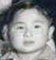

| 148 107 60 25 光 |
光美 名元士 Göng Mî [Ngũn Xù] Guāngměi (Yuánshì) Chin Gong Mee |
|||||||||||||
|---|---|---|---|---|---|---|---|---|---|---|---|---|---|---|
| 149 108 61 26 前 |
榮? Róng ? |
#5# 榮澤 Róngzé Chin Wing Jock (Quong W. Wong) m. Lily Wong #3# |
#16# 榮廣 Róngguǎng Chin Wing Quong (Raymond Gee) m. Sue Que #14# |
#20# 榮汗 Rónghàn Chin Wing Hon (S.N. Kwong) m. Mary Kwong #18# |
榮祿¹(樾雲²) m. (1) ? (2) 美瓊 Vẽin Lùk (Yòt Vũn) m. (1) ? (2) Mî Kěin Rónglù m. (1) ? (2) Měiqióng |
|||||||||
| 150 109 62 27 遠 |
#27# Helen Chin |
#38# Suling Wong |
#36# Sue Wong |
#4#  Billy Wong |
#26# Tommy Gee |
#25# Raymond Gee |
#17# Betty Gee |
#15# Nancy Gee |
#21# Doris Kwong |
#19# Sophie Kwong |
迺文 Näi Mũn Nǎiwén |
迺術 Näi Sùt Nǎishù |
迺任 Näi Ngìm Nǎirèn |
|
¹ Eric Chin's Chinese name is 陳力涛, son of 陳乃实, grandson of 陳榮祿, and great grandson of 陳光美. Eric lives in Arcadia, California.
² 樾雲 Yòt Vũn (Yuèyún) was the pen name of 榮祿 Vẽin Lùk (Rónglù). His three sons were from his first wife. He and his second wife,美瓊 Mî Kěin (Měiqióng), did not have any children.